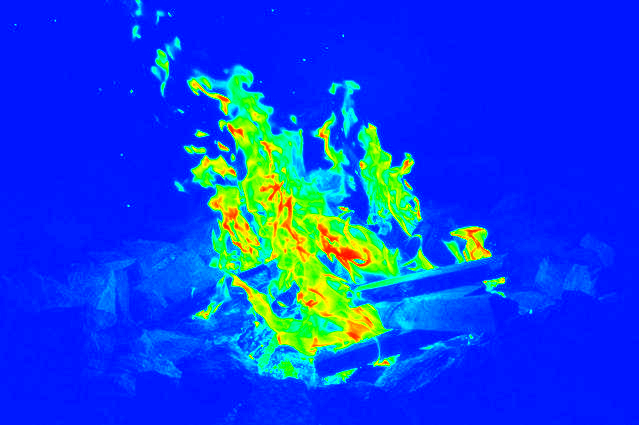

疑似カラー
実行例

ソースコード
TypeScript
{kind=link}
解説/アルゴリズム
- ピクセルの色から明るさを計算します。
- 計算した明るさの範囲を色相（青から赤）の範囲に変換し、ピクセルの色としてセットし直します。
画像の明るさを確認する場合、たとえばグレースケールの画像に変換するという方法があります。
ただ、グレースケールの画像だと微妙な明るさの違いが分かりづらいので、その明るさから更に色相のようなカラーパターンで色を置き換える「疑似カラー」という手法を紹介します。
各ピクセルをグレースケールに変換後、その明るさに応じて色相上の色に置き換えるのですが、色相の範囲を最小～最大にしてしまうと、暗い色も明るい色も赤色となり、明暗の区別が付かなくなりますので、色相の範囲は赤～青までに設定します。
暗い色を青に、明るい色を赤にすると疑似カラーとして見やすいと思いますので、明るさが小さいほど色相の値を大きく、明るさが大きいほど色相の値を小さくするといいでしょう。
コード例(GLSL)
attribute vec2 aPosition;
attribute vec2 aTexCoord;
uniform vec2 uResolution;
varying vec2 vTexCoord;
void main() {
vec2 clipSpace = aPosition / uResolution * 2.0 - 1.0;
gl_Position = vec4(clipSpace * vec2(1, -1), 0, 1);
vTexCoord = aTexCoord;
}
precision mediump float;
uniform sampler2D uImage;
varying vec2 vTexCoord;
float norm(float a, float b, float v) {
return (v - a) / (b - a);
}
float lerp(float a, float b, float t) {
return a + (b - a) * t;
}
float map(float v, float a, float b, float c, float d) {
return lerp(c, d, norm(a, b, v));
}
vec3 hsb2rgb( in vec3 c ){
vec3 rgb = clamp(abs(mod(c.x * 6.0 + vec3(0.0, 4.0, 2.0), 6.0) - 3.0) - 1.0, 0.0, 1.0);
rgb = rgb * rgb * (3.0 - 2.0 * rgb);
return c.z * mix(vec3(1.0), rgb, c.y);
}
void main() {
vec4 color = texture2D(uImage, vTexCoord);
float gray = 0.299 * color.r + 0.587 * color.g + 0.114 * color.b;
float hue = map(gray, 0.0, 1.0, 2.0 / 3.0, 0.0);
gl_FragColor = vec4(hsb2rgb(vec3(hue, 1.0, 1.0)), 1.0);
}
コード例(p5.js)
import * as p5 from "p5";
new p5((p: p5) => {
let image: p5.Image;
p.preload = () => {
image = p.loadImage("./0.jpg");
};
p.setup = () => {
p.createCanvas(p.windowWidth, p.windowHeight);
image.loadPixels();
// 画像の全ピクセルを走査
for (let y = 0; y < image.height; y++) {
for (let x = 0; x < image.width; x++) {
// 対象のピクセルを取り出す
const color = getPixel(x, y);
// 取り出したピクセルからRGBを抽出
const r = p.red(color);
const g = p.green(color);
const b = p.blue(color);
// グレースケール値（明るさ）を計算
const gray = 0.299 * r + 0.587 * g + 0.114 * b;
// 明るさの範囲(0～255)を色相の範囲(240～0)に変換
const hue = p.floor(p.map(gray, 0, 255, 240, 0));
// 計算した色相から色を作り、もとのピクセルにセットし直す
const hsb = p.color(`hsb(${hue}, 100%, 100%)`);
setPixel(x, y, [p.red(hsb), p.green(hsb), p.blue(hsb)]);
}
}
image.updatePixels();
p.image(image, 0, 0);
};
function getPixel(x: number, y: number): number[] {
const i = (y * image.width + x) * 4;
return [
image.pixels[i],
image.pixels[i + 1],
image.pixels[i + 2],
image.pixels[i + 3],
];
}
function setPixel(x: number, y: number, color: number[]): void {
const i = (y * image.width + x) * 4;
image.pixels[i + 0] = color[0];
image.pixels[i + 1] = color[1];
image.pixels[i + 2] = color[2];
}
});